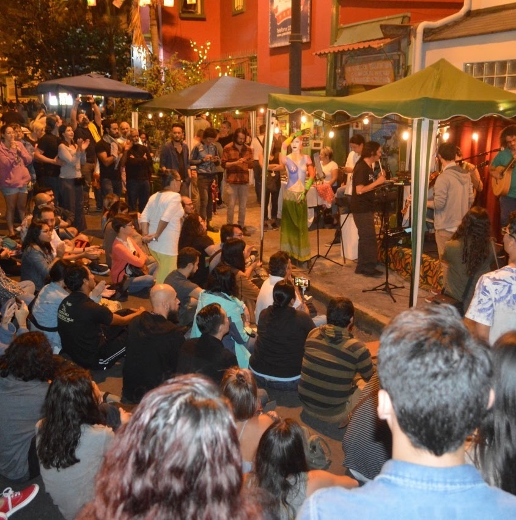

DEL 20 AL 24 DE OCTUBRE - SJO
FESTEC 2026
Una semana para compartir, crecer y celebrar lo que nos mueve.
SÍGUENOS EN INSTAGRAM
Una semana.
Mil experiencias.
Una comunidad.
FESTEC es la semana de actividades organizada por la Federación de Estudiantes, donde el deporte, el arte y la cultura se encuentran para fortalecer nuestra comunidad universitaria.

20 — 24 OCT · SJO